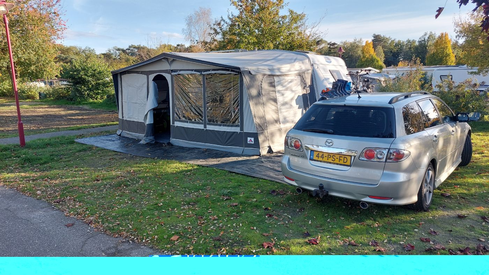

Terug naar alle campings
Vakantiepark Prinsenmeer

Ommel (gemeente Asten) · Vakantiepark · Ons cijfer: 7
Groot vakantiepark in Ommel bij Asten, aan een recreatieplas met zandstrand. Met een subtropisch zwembad, glijbanen, speeltuinen en midgetgolf is er voor kinderen genoeg te doen.
Info over het park
PlaatsnummerPark gesloten
Stroom10 A
Oppervlakte100 m²
Water op de plaatsJa
Afvoer op de plaatsJa
Oppervlakte parkca. 54 hectare
Toeristische plaatsen483
Waterrecreatieplas met zandstrand
Zwembadsubtropisch zwembad met glijbanen
Sport en spelsportvelden, tennisbanen, speeltuinen, midgetgolf
Hondenaan de lijn toegestaan
Statusgesloten sinds december 2023
Dit vonden we fijn
- Ruime camping en dus genoeg te zien
- Mooie plekken gezellige laantjes
Dit kan beter
- De tempratuur van zwembad mocht wel wat hoger voor een subtropisch zwembad